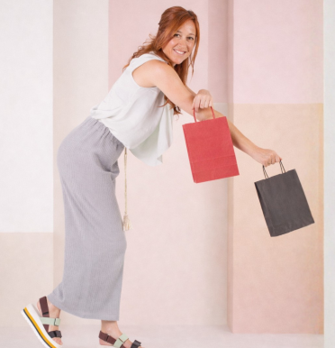
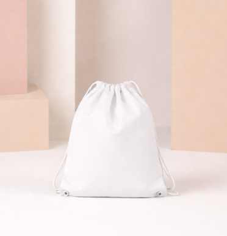
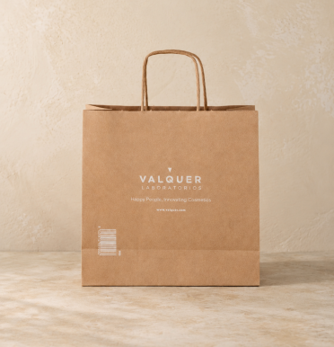

Bolsas de papel kraft de colores 18x24x8
Bolsa de papel de 18 × 24 cm y fuelle de 8 cm, con asas de papel rizado.
Ver ficha oficial ↗PAPEL • TELA • PACKAGING
Compara formatos reales y prepara medidas, cantidades y personalización para una consulta comercial más precisa.

Tres referencias reales. Las opciones, precios y existencias se confirman en la tienda oficial.
Bolsa de papel de 18 × 24 cm y fuelle de 8 cm, con asas de papel rizado.
Ver ficha oficial ↗
Mochila TST de 36 × 42 cm, con cierre fruncido y doble cordón.
Ver ficha oficial ↗
Bolsa kraft reciclada de 22 × 23 cm y fuelle de 9 cm, con asas rizadas.
Ver ficha oficial ↗TU LISTA LOCAL
Tu selección queda en este navegador. No reserva productos ni envía pedidos.
La tienda ofrece bolsas de papel, tela y packaging ecommerce.
El catálogo diferencia materiales, cierres y usos.
Las fichas seleccionadas muestran medidas; la personalización requiere confirmar el producto y el diseño.